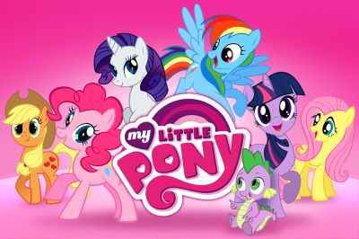

Um pouco sobre My Little Pony
My Little Pony é uma franquia criada pela empresa Hasbro, que ganhou grande popularidade com a série My Little Pony: A Amizade é Mágica, lançada em 2010. A história se passa no reino mágico de Equestria e acompanha a vida de pôneis que aprendem importantes lições sobre amizade.
A protagonista, Twilight Sparkle, é uma pônei unicórnio (e depois alicórnio) que estuda a magia da amizade ao lado de suas amigas. Cada personagem representa um elemento da amizade, mostrando que união, respeito e companheirismo são fundamentais.
Principais temas da série:
- Amizade e trabalho em equipe
- Superação de desafios
- Respeito às diferenças
- Aprendizado com erros
- Magia e aventuras em Equestria
Capa do DVD do primeiro episódio

Alguns personagens importantes
| Nome | Função | Onde encontrar |
|---|---|---|
| Twilight Sparkle | Princesa da Amizade | Castelo de Friendship, em Ponyville |
| Rainbow Dash | Responsável pelo clima / Elemento da Lealdade | Cloudsdale e Ponyville |
| Pinkie Pie | Organizadora de festas / Elemento da Alegria | Sugarcube Corner, em Ponyville |
| Rarity | Estilista / Elemento da Generosidade | Carrossel Boutique |
| Fluttershy | Cuida dos animais / Elemento da Bondade | Cabana próxima à floresta |
| Applejack | Fazendeira / Elemento da Honestidade | Sweet Apple Acres |